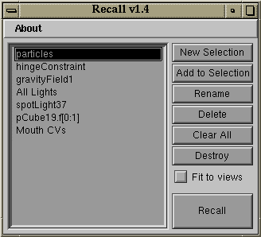
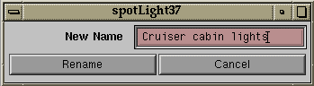

recall
Recall provides support for named selections. It allows the artist to create and identify selection groups by name and recall them with the double-click of the mouse.
When you first run Recall you will be presented with a window as shown at right. (of course, the Named Selection List will be empty to start). To add a Named Selection, select one or more objects or components and click "New Selection". The selection will be added to this list using the name of the first selected item.
To recall a Named Selection, highlight one or more Named Selection(s) and click the "Recall" button. You can also simply double-click on a Named Selection. Any number of Named Selections may be recalled at one time.
If the "Fit to views" box is checked when a selection is recalled, Maya will center the selected items in all layout views.
To add items to a Named Selection, select one or more nodes from your scene, highlight one or more Named Selections, then click the "Add to Selection" button. The selected items will be added to all highlighted Named Selections.
Any pickable item1 can be stored in a Named Selection. This includes objects, components,
cameras, lights, constraints, handles, etc. Specifically, Recall simply stores the
results of the MEL command ‘ls -sl’ and reissues the selection when
requested.2
If an item is deleted after being added to a Named Selection, it, of course, cannot be reselected. Recall will politely ignore non-existing items in a Named Selection. If you delete an item that is referenced in a Named Selection, and then subsequently recreate it, it will again be picked when recalling a selection.
To rename a selection, highlight the Named Selection in the list and click "Rename". A window will be presented that will allow you to rename the Named Selection. This does not rename anything within the scene file. In the Rename window, type the new name into the provided field and click "Rename".
To delete a selection, highlight a Named Selection in the list and click "Delete". This does not delete anything from your scene file.To clear all Named Selections, click "Clear All".
The status and contents of the Named Selections are preserved when you close the
Recall window. Next time you activate it with the ‘recall’ MEL command the
window will be re-opened with the previous contents. You can destroy the window,
along with all of its contents, by clicking the "Destroy" button. Note that this
will clear all of your Named Selections.
Named Selections are saved with a Scene File.3 If you Load or Import a Scene for which there have been Named Selection groups defined, the Named Selections will be loaded as well. After the Scene is loaded, the Named Selection list will update to reflect the settings for the current scene. Note that clashing nodes are not considered when importing Scenes (see Behind The Scenes4).
If you clear the scene, either through the menus or with the MEL command
‘file -f -new’, the Named Selection list will clear as well.
When using Maya 2.0's "Optimize Scene Size" function the 'recallData' node would typically be identified as an "Empty Partition" and would be deleted. To prevent this, an explicit
connection is created between "persp.translate" and "recallData.translate".
2
As mentioned above, Recall defines a selection by storing the results of the MEL
command ‘ls -sl’. This command returns an array of multiple strings.
All good and fine, but I ran into a snag when trying to store multiples of these
for Recall's selection lists.
MEL does not offer multi-dimensional arrays. Nor does it offer structures. I wanted there to be no limit to the number of named selections you could define, and I wanted the flexibility to add, remove and rename them at will. How do you store multiple string arrays without multi-dimensional arrays or structures? Another factor: these arrays had to be accessible globally across multiple functions.
The method I chose was to create a hidden window that consists of multiple
textScrollList widgets. As named selections are added to the bottom
of the list in the Recall window, textScrollList widgets are added to
the invisible window's columnLayout. By default, UI elements are added
as the last window element; therefore, by coincidence, I could keep the items
in the Recall list in sync with the data stored in the multiple textScrollList
elements. To see this hidden window in action, show the window with the following
MEL command:
showWindow hiddenRecallDataWindow;
3
When Recall runs, it creates a partition-class node with the name recallData.
A custom attribute ‘data’ is added to this node; this attribute is used to
store the Named Selection list. The node is saved with the Scene file, and allows
Recall to restore a Named Selection list when a Scene is reloaded.
(One could argue that I could dispense with the hidden data window completely and just use this data node; however, reading, editing and storing this data would require some form of multi-dimensional array. Remember these?)
4 I wanted the Recall load/import system to be intelligent enough to compensate for clashing nodes, renaming and prefixing recall lists as needed. When a Scene with a Recall Data Node is imported, any of the following may result:
The existing scene has no Recall Data Node, and none of the items included in the imported Recall list clash with existing items. No special action necessary.
The existing scene has no Recall Data Node, but some of the items included in the imported Recall list clash. The appropriate prefix should be added to items in the list.
The existing scene has a Recall Data Node, and none of the items included in the imported Recall list clash. The prefix parsed from the clashing imported Recall Data Node need not be added to its list contents.
The existing scene has a Recall Data Node, and some of the items in the imported list clash with existing elements. The prefix parsed from the clashing imported Recall Data Node should be added to its list contents (but only those that clashed with existing scene elements).
There are likely more variations of this, but you get the idea. Bottom line, it's gonna be a lot of work that requires lots of juggling to make Recall capable of handling all of these situations. If I find that I really need it to be this robust, I'll look into adding this functionality.